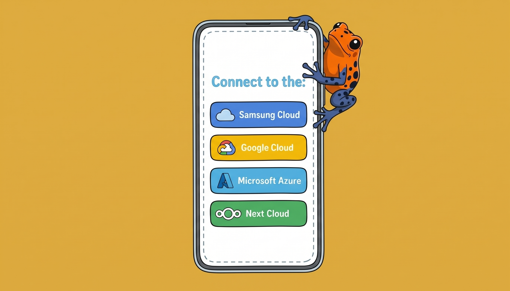

Digital independence: start with the easy wins
by Ada Homolova · October 23, 2026

Digital independence is a scale rather than a state. It means you know what risks you're running. Santi van den Toorn, an ethical tech consultant, helps groups reduce how much they depend on Big Tech. This is what you should pay attention to:
- Ownership: who owns the company, and which laws can reach it?
- Hosting: where does the data sit, and on whose infrastructure?
- Exit: can you export your data and leave?
The practice is not straightforward: a European company can still run on AWS or Google Cloud. The US government can ask American companies to hand over data, even if the data is stored in Europe. Signal is an American non-profit, but still one of the best options for sensitive contact.
Replace the easy ones now
The main idea is simple: replace tools that are cheap and easy to move to other versions or alternatives. Keep tools that are hard to change because they're used every day and would take too much time to switch. Don't try to run everything yourself unless you have the staff and the time to fix problems as they come up. Check each tool's export and import support first.
The easy ones:
Newsletter tools (Mailchimp, ActiveCampaign)
- Brevo is French, hosted on OVH in France and Germany — but your data sits on Google Cloud in Belgium
- Keila is German, open source, self-hostable
- Mailjet is French-founded, now owned by Sweden's Sinch — and hosted on Google Cloud in Germany and Belgium
- Ghost is open source, and also runs your website and memberships
E-signing (DocuSign)
First check which legal signature level your contracts actually need.
- Yousign/Youtrust (French, built around the EU's eIDAS rules — but the platform runs on US-owned AWS and Azure), or self-hosted
- DocuSeal if you want open source
- Skribble is Swiss, with qualified signatures under EU and Swiss law
Automation (Zapier)
CRM (HubSpot)
- Brevo CRM for a small team that mostly needs email plus a light pipeline
- Odoo is Belgian and covers the whole back office.
- CiviCRM if you run memberships or donations
Web analytics (Google Analytics)
Design (Figma)
- Penpot Spanish and open source
Whiteboards (Miro)
- Conceptboard is German, with a managed cloud
- Excalidraw for quick sketching, open source
- draw.io for structured diagrams
Simple project boards (Trello)
- Vikunja for plain kanban
- OpenProject for Jira-style projects
- Nextcloud Deck if you already run Nextcloud
No-code databases (Airtable)
- Baserow Dutch, MIT-licensed core with paid premium, EU cloud or self-host
- Grist is more data-centric
Dashboards (Tableau, Power BI)
- Metabase is open source, US-owned
- Apache Superset
Transactional emailing (SendGrid, Mailgun, Postmark)
- Scaleway Transactional Email is EU-only, hosted in Paris
- AhaSend runs its own servers in Germany and Finland
- Lettermint is Dutch, EU-only infrastructure
- Brevo and Mailjet send transactional email too
- Postal if you want to self-host
Team chat (Slack)
And then there are the tricky ones:
Workspace (Google Workspace, Office 365)
Ten years ago we used a local office package and an email client. Today everything is in the cloud as well. As everybody uses it every day, migration is a big task.
- Nextcloud German, open source, covers files and collaborative docs
- Infomaniak kSuite is a managed Swiss suite
Similar, but not a full workspace replacement:
- Proton Docs Swiss and end-to-end encrypted
- CryptPad French, end-to-end encrypted for documents
Hosting (AWS et al.)
Migration takes time, but there are established European providers
Self-hosting is not free
Running open source on your own servers shifts some of the responsibility to you: patching, security, backups — and when something breaks, it's your problem. Santi's advice: keep self-hosting to a few tools you can actually maintain, use hosted open source for the rest.
Know the limits
Even a fully European stack runs on hardware designed and built elsewhere. What you control: where your money goes, where your data lives, and whether you can keep publishing when a service cuts you off.
Want to think through your own tool stack with us? Join the chat in The Pond.
Sessions like this happen twice a month. See the full session with Santi: